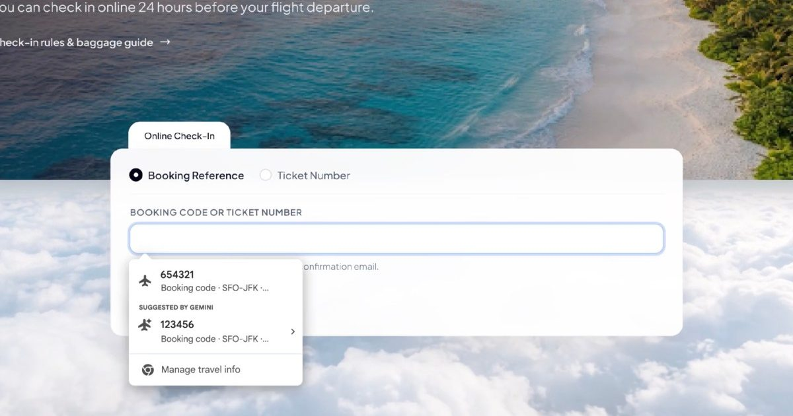

Теперь автозаполнение с помощью искусственного интеллекта Chrome позволяет просматривать Gmail и заполнять формы
Обновление автозаполнения позволяет Chrome получать подтверждения рейсов, информацию об отслеживании, сведения о заказе и другую информацию из папки «Входящие» с вашего разрешения.